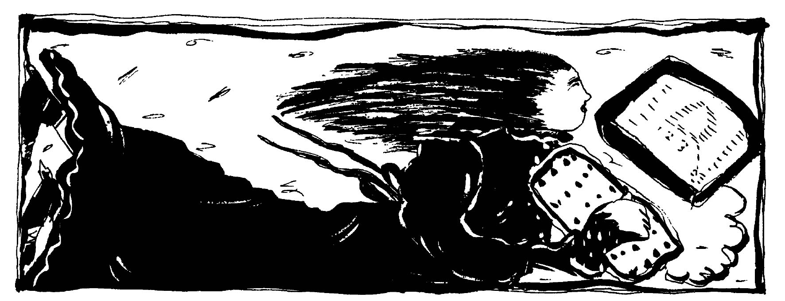

Imagine telling your dream to your friendly personal computer. Upon hearing your dream, your computer interviews you about your feelings in the dream, your associations to the various symbols and your memories for recent events. The computer then reminds you of similar symbols and themes from previous dreams and what was going on in your life at that time. The computer then helps you to create an animated cartoon of your dream while it analyses the movements in your cartoon in terms of your typical animation style and feeds you back insights on the feelings expressed in the animation sequence. If you wanted to dialogue with the images in the dream, the computer would analyze thematic sequences to your dialogues, explain how you were feeling in past times during the expression of similar themes and suggest areas to explore.
Upon request, your computer displays text and pictures concerning universal aspects of particular symbols in your dream, selected on the basis of your personal associative context. To help you distinguish between aspects of your dream symbols that are personal and those aspects at are more universal, the computer displays dreams from a large dream bank containing the same symbols appearing in your dream, and helps you discover your dream's relationship to these more typical patterns. If your dream contained some important references to apparently external events, the computer would provide you with a survey of dream themes and symbols collected over the past 24 hours from around the world, and by providing you with visual statistics, help you determine if your dream was unusual and idiosyncratic, or if a significant number of other people were currently having dreams with similar themes or symbols. You could determine if your "earthquake" dream this morning, for example, was conveying a personal upset in terms of a personal metaphor or in terms of an objective event that was being used as a symbol around the world. If the nature of the dream was such that you wanted to contact others who were having similar dreams, the computer would promptly inform you of how to contact those individuals.
This bit of science fiction fantasy may or may not seem appealing. Dreams are intimate and from the "right brain", while computers are definitely extensions of the "left brain" world. Dreams and computers have in common, however, the ability to process enormous amounts of information in order to create their respective products. When trying to interpret our dreams, our limited conscious knowledge is often meager compared to the amount of information condensed in a dream. What would happen if the computer's information processing ability were put into the service of helping us understand the information the dream has processed?
Everything described in the above imaginary scenario is possible, either now or with computer systems of the not-so-distant future. Working toward this future, I have been administering a far-reaching program called the "Dream Net Project". Like the initiation of the space program, it is ambitious, requiring the coordination of many different component projects under development by many different people and should lead to many interesting beneficial spinoffs in the process. It certainly has some profound implications for networking among our community of dreamers. Even if the "Dream Net" project can not, for some years to come, yield the type of incredible results depicted in the above imaginary scenario, there are many useful things that today's personal computer can do to relieve some of the drudgery of dream collecting and analysis, both for a dreamer's personal use and for research purposes. For example, a dream journal word-processing and filing system would make it easier to write down dreams (it is easier on a word processor), to modify and manipulate the dream text in the process of written interpretive work, and to store, sort, and retrieve past dreams that may be relevant to the dreamwork at hand. That much is quite possible today.
In fact, rudimentary versions of such a computer-aided "dream interpretation journal" have been constructed. These are rather simple tools that store your dreams by title and compile your "dream symbol dictionary" from information you provide. The interpretation routine is based on a simple "symbol definition substitution" method, prompting you to define your symbols, then substituting your definitions for the symbols in your dream, giving you a very rough "interpreted" dream text. If you have a "communications device" (a modem), instruct your computer to call 1-303-722-6210 and you can play with this symbol substitution "dream interpreter" routine. When you call in, select the "Dream Net" menu. Here you will find, besides the dream "interpreter", many other items of interest to dreamers. It contains my initial attempts to introduce the dream community to on-line computer networking. This service is part of a larger computer network system called "Parapsychological Information Network" (for more information about P.I.N. and its newsletter, write to William Tedder, P.I.N. Systems Operator, P.O. Box 10456, Denver, CO 80210).

At this particular point in time, I am working to develop a more useful filing and retrieval system for personal dream collections. Currently, the only commercially available "data-base" program that seems suitable is the rather expensive program called "Sci-Mate Personal Text File Manager." Its "bit-mapped" memory system allows you to retrieve all stored dreams that contain the word, or words, you specify. As I make contact with more dreamers who are computer specialists, I hope to be able to develop a less expensive dream filing system that incorporates this amazing feature.
Being able to work with large files of dreams becomes especially important when dreamers wish to learn from one another, as in group projects or in research. In the Sundance Journals I began a rather tedious project called "The Book of Dreams". Its goal is to gather collections of dreams and organize them around particular symbols. You will be able to look up "snake" in the "Book" and read many different dreams involving snakes and get some idea about how snakes behave in dreams. This information could help you determine the meaning of your snake's appearance in your dream. The experts on symbology whom we respect—such as Carl Jung or Joseph Campbell—are essentially historians of mankind's symbolic output. One way these experts answer a question such as, "what is the meaning of 'snake' in a dream?" is to present many different dreams, stories, and legends in which a snake appears. I have boxes of dream collections sent to me by people responding to the original announcement concerning "The Book of Dreams". With access to computers, it is now a reasonable task to begin entering and compiling these dreams. I am now interested in locating other persons who are interested in contributing dreams to this collection, or in other ways helping to work on the project. As the "Book of Dreams" develops, printed versions will be made available, although the ultimate use of the collection will be to store over a million dreams on a computer for instant access by the dreamer.
The original "Sundance Experiment" concerned the emerging apocalyptic imagery in dreams, and attempted to integrate these dream themes in search of an emerging "New Age" mythology. Today there have been several attempts to stimulate a group to dream about a particular topic. It is difficult to process the information in these dreams, to determine what themes the group dreams have in common, to what extent such themes might be expected by chance, and to pinpoint group dream themes that are suggestive of a transpersonal or psychic connection. It was this particular problem that stimulated me to begin the "Dream Net Project".
The method of "content analysis", developed by Calvin Hall and Robert Van de Castle, is a useful tool for analyzing dream series or large groups of dreams for certain themes. It has facilitated dream research in many ways, and it has the unique advantage of being "theory free". George Baylor, at the University of Montreal, has created a computer-aided content analysis program on a large, main-frame computer. His work may be helpful in developing a personal computer version that would prompt the individual dreamer in content analyzing a series of dreams. It would also facilitate the content analysis of the results of a group dream experiment, such as the "Dream Helper Ceremony" devised by Bob Van de Castle and myself (see Omni Magazine, December, 1983).
This particular group dream experiment involves a group of dreamers who attempt to have telepathic dreams of healing and guidance for a target person whose problems are unknown to the dreamers. A computer-aided content analysis program, coupled with a large collection of dreams, would be able to show what themes are emerging in the dream helpers' dreams and whether or not such a focus of dream themes would be expected in a random sample of dreams. This system could also be used to compare the group's dream themes with other group's dream themes to show that this particular group of dream helpers are focusing on a narrow target topic. This particular application of computer-assisted dream interpretation is the one that I am most interested in at this particular point in time as I believe that it will help to focus more attention upon the "paradigm-smashing" potential of group dreaming.
One of the spinoffs of working on such a project is that creating a computerized dream interpretation program requires you to examine your assumptions about how dreams are to be interpreted. To clarify my own thinking about the processes involved in interpreting a dream, I developed a "programmed workbook" for dream interpretation. Entitled Dream Realizations, it leads the user through a 28-day period of dream recording and dream interpretation through journal writing, and daily application to problem solving. It is an attempt to lay out a "program" (although no computer is involved) of creative problem-solving using dream interpretation as the major source of inspiration. In testing this workbook with hundreds of others, I have found that the majority of users report favorable and exciting results that fit their own needs. Such results show that a "programmatic" approach to dreamwork doesn't necessarily have the pitfalls you might imagine. It does seem possible to develop instructional material for dreamwork that is capable of being adapted to the computer.
If you find yourself interested in any of the topics mentioned in this article, if you want to keep posted on developments and to learn how you might participate in this project, send me your name and address. This next June (20-23) at the 2nd Annual Conference of the Association for the Study of Dreams, which will be held in Charlottesville, Virginia, I will be organizing a "Special Interest Group on Dreams and Computers". I hope to meet you there where we can all exchange notes on this topic.